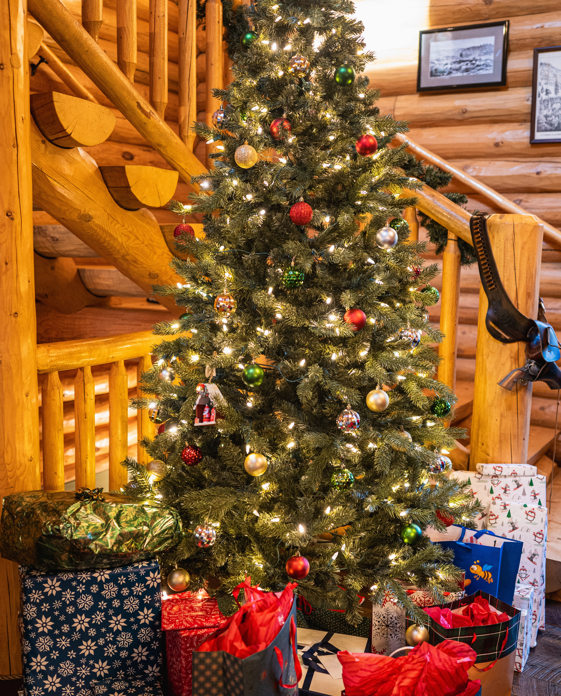
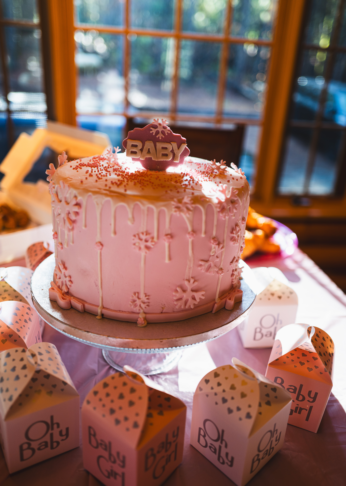
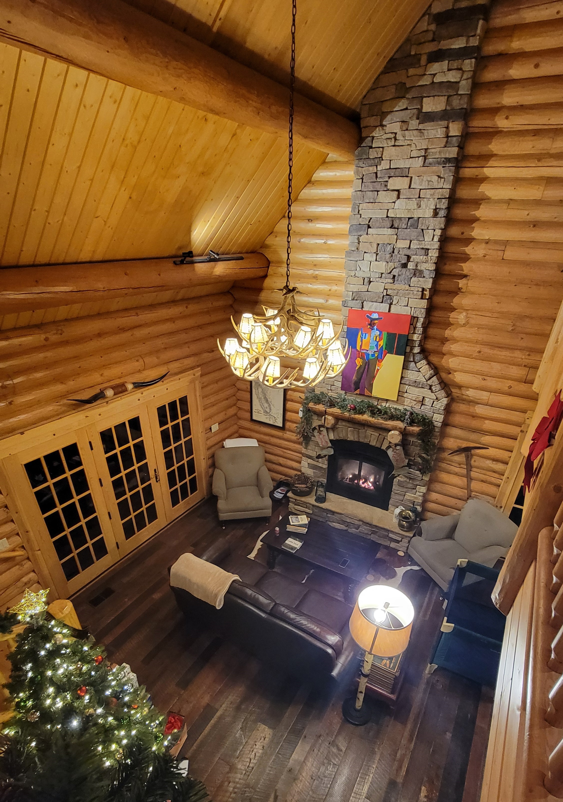

Cabin In The Woods
If you have never experienced drinking hot chocolate in a chilly morning while looking out into the woods, I highly recommend it.
Now choosing the right cabin to stay in is extremely important, and I cannot stress that enough. This was certainly what happened with this trip.
Between me and my siblings, it took us several months (almost a year, I would say) to decide on a cabin to rent for Christmas. This was for
multiple special occassions, a charcuterie of occassions if you will. Specifically, for our parents' retirement party and for my baby shower.
The cabin was located deep in the woods in South Lake Tahoe. To reach the cabin, you had to drive down a narrow, unpaved road and pass by several private
homes. The cabin was at the end of the road. The cabin was three stories high, with the main floor on the second floor.


